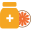

健康建议
请查阅您的专属健康改善建议
膳食建议专家
{{options[index]}}.{{site.indexName}}
{{site.personality}}
营养建议专家
{{options[index]}}.{{oli.indexName}}
运动建议专家
膳食建议
营养建议
运动建议
康加膳食、营养专家 肖荣教授领衔的专家团队为您提供。
康加运动学专家 高岭娣教授、生活方式专家 潘晓明博士领衔的专家团队为您提供。